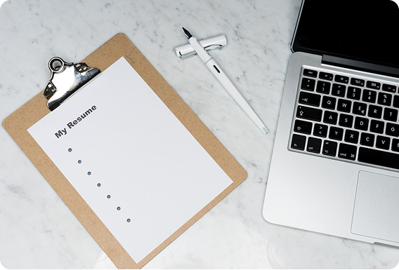

Featured Article

How to create a strong CV
Learn the key steps to build a professional CV that attracts recruiters and highlights your core strengths effectively.
Read MoreCareer Blog
How to create a strong CV
Learn how to create a professional CV that highlights your skills and makes a strong first impression.
Jon Putnam
Fullstack Dev
Most In-Demand Skills in 2026
Explore the latest skills employers are looking for and stay ahead in today's job market.
Ruth Serey
Designer
From Student to First Job
Be inspired by a real journey from student life to landing a first job, including key challenges.
Ken Oudaphea
Fullstack Dev
Video Guides
CV vs Resume
Understand the key differences between a CV and a resume and when to use each.
CV Template Tips
Discover free professional CV templates and how to customise them effectively.
Interview Prep
Top interview tips for freshers — common questions and how to answer them confidently.
How to Use NextRole
- 01. Create your profile
- 02. Build your professional CV
- 03. Search for matching jobs
- 04. Apply through the platform